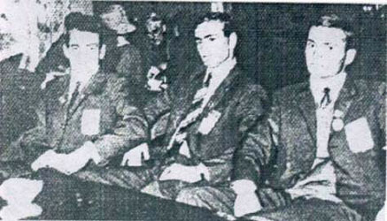

Szylweszter Kubica (POL)
1969 European FX Bronze Medalist

Wilhelm, Mikolai and Szylweszter Kubica
Medal Total
European Championships: 1 Bronze
Szylweszter was born on December 28, 1949 in Radlin, Poland. His two older brothers, Mikolai and Wilhelm, were also world-class gymnasts. They were coached by Henrik Gaca in Krakow. The three brothers competed together at the 1970 World Championships and the 1972 Olympics!
Competition Results
1968
Olympic Games: 5th Team, 31st AA
1969
European Championships: 5th AA, 3rd FX, 4th V
1970
World Championships: 5th Team, 22nd AA
1971
European Championships: 7th AA, 5th R
1972
Olympic Games: 4th Team, 22nd AA
1973
Paris Grand Prix: 2nd AA
1976
Third Olympic Qualifying Competition: 6th Team, 21st AA
This page was created on December
23, 2004 and was last updated on February 22, 2021.
© Gymn Forum